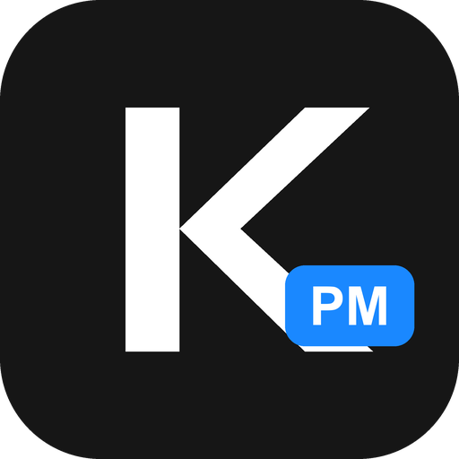
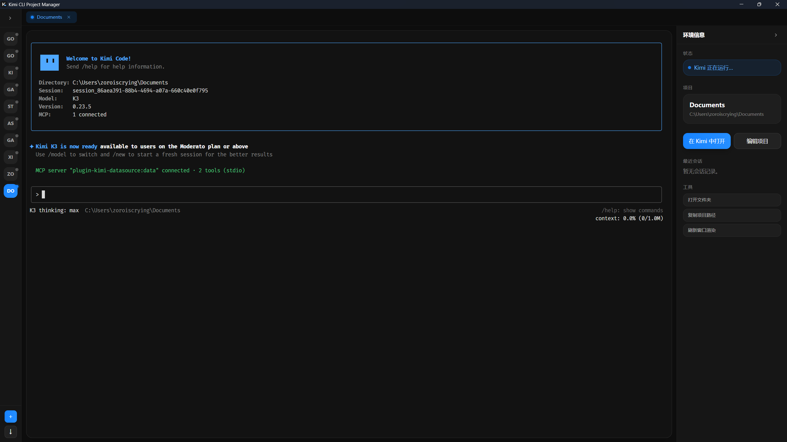

Kimi CLI Project Manager
把每一个 Kimi Code CLI 项目收进同一个桌面工作台： 多标签内嵌终端、会话自动恢复，切换项目不再丢上下文。

每个项目独占一个内嵌终端标签，切换不中断，多个 Kimi 会话并行推进。
打开项目自动定位最近一次 Kimi 会话并恢复现场，接着上次的思路继续。
读取 Kimi CLI 的本地历史，把用过的项目批量导入，不用手动逐个添加。
运行状态、项目详情、最近会话一目了然，打开文件夹、复制路径一步到位。
KPM 是开源免费的个人项目。你的支持是我持续打磨它的动力。